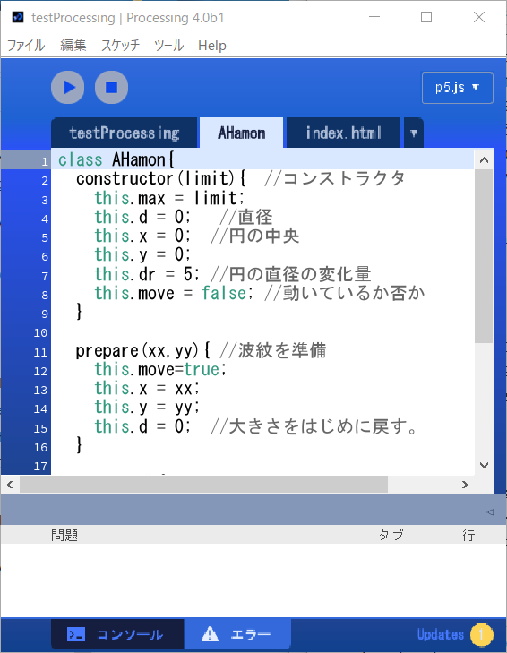

クラスを作る
プログラムの世界では、クラスはプログラム部品で、状態(変数)や働き(メソッド)を定義した「設計図」です。「鋳型」ともいえるクラスから実際の仕事をするオブジェクトを作ります。ここでは自分のプログラムに適した独自のクラスを定義し、それを使う方法を説明します。クラスの定義
プログラムの部品として働くクラスを作ることで、プログラムを効率的に記述できます。独自の新しいクラスを作る場合、そのクラスの機能を考え、その実現に必要な変数やメソッドを決定します。(1) クラスの機能を考える。
(2) クラスの名前を決める。変数と同じルールでつけるが、クラスの名前の先頭は大文字にする。クラスの機能を体現するような名前をつけるのがいい。
【名前の付け方】英数字、アンダースコア(_)、ドルマーク($)からなる文字列で，名前の先頭は数字以外の文字にします。名前の長さは任意です。ただし、JavaScriptがキーワードとして使う文字列(予約語)は使えません。
(3) オブジェクトを作る時にあらかじめしておきたい処理を、コンストラクタに指定する。コンストラクタ内の代表的な処理にプロパティの定義がある。コンストラクタで作られるオブジェクト(自分自身)を表すthisキーワードを使って、次のように定義する。
this.プロパティ名 = 値;(4) 機能を果たすためのメソッドを考える。メソッドの名前、必要な引数を決め、処理を書く。
クラス定義には、キーワードclassを使います。classに続いてクラス名を書き、その後ろのブロック(｛と｝の間)に、「コンストラクタの定義」「メソッドの定義」を書きます。
class クラス名 {
コンストラクタの定義
constructor (引数名, 引数名, … )｛
.... プロパティの定義 ....
.... オブジェクトを作る時に、特別にしたい初期処理 ....
}
オブジェクトを作るnew演算子の後ろに指定したクラス名(引数)が、このコンストラクタを呼び出す。
メソッドの定義
メソッド名(引数名, 引数名, …)｛
メソッド内の処理
｝
} // クラス定義の終わり
コンストラクタの定義をしない場合は、引数のないコンストラクタがデフォルトで定義されます。
プロパティ、コンストラクタ、メソッドがどのように定義されているかは、そのクラスを使う時に知る必要があります。そのクラスを使うプログラムと、クラスとの間をつなぐ情報という意味で、Application Programming Interface(API)と言われます。
AHamonクラスの定義
クリックで開始⇔停止
コンストラクタの定義
AHamon(limit) //引数は波紋の最大の直径
プロパティの定義
this.max = limit; //円の最大値
this.d = 0; //直径
this.x = 0; //円の中央のx座標
this.y = 0; //円の中央のy座標
this.dr = 5; //円の直径の変化量, デフォルトで5
this.move = false; //動いているか否か, 動いていればtrue
メソッドの定義
prepare(xx, yy) //波紋を準備、円の中心を(xx, yy)に、大きさを0にする。
display() // 描画を実行するメソッド
メソッドの定義の方法は、関数の定義と同じです。
AHamonクラスは次のように使われることを想定しています。
(1)波紋の最大値を指定してAHamonオブジェクトを作り、
(2)prepare()メソッドで位置を決め、大きさを初期値のゼロにし、
(3)その後display()メソッド実行する。display()メソッドは、円を徐々に大きくしながら描画し、指定した波紋の大きさになると描画が止める。
【リスト AHamonクラス】
class AHamon{
constructor(limit){ //コンストラクタ
this.max = limit;
this.d = 0; //直径
this.x = 0; //円の中央
this.y = 0;
this.dr = 5; //円の直径の変化量
this.move = false; //動いているか否か
}
prepare(xx,yy){ //波紋を準備
this.move=true;
this.x = xx;
this.y = yy;
this.d = 0; //大きさをはじめに戻す。
}
display(){
strokeWeight(2); //線の太さを指定
if(this.move){ //波紋広がり中の処理
this.d=this.d+this.dr; // 大きさを増加
ellipse(this.x, this.y, this.d, this.d); // 円を描く
if(this.d>this.max){ //最大値を越えたので止める。
this.move = false;
}
}
} // display()の終わり
} // class定義の終わり
AHamonクラスを使う(その1)
AHamonクラスを使って、波紋がランダムな位置で広がるプログラムを作ってみましょう(先の図)。setup()の中で、AHamonオブジェクトをひとつ生成し、変数hamonに代入しています。draw()の中で、hamonに対してprepare()メソッド、display()メソッドを実行しますが、波紋が最大値まで広がり、波紋の描画が終了した後で、新しい位置に波紋が描かれるように、AHamonオブジェクトの変数moveの値を調べ、falseの時だけ、prepare()メソッドを実行しています。エクスクラメーションマーク!は論理演算子の否定で、hamon.moveがfalseの場合trueとなります。次の2行は全く同じ意味です。
if(!hamon.move) { hamon.prepare( ... ); }
if(hamon.move == false) { hamon.prepare( ... ); }
【リスト ClassHamon1】
let hamon; //AHamonオブジェクトを保存するための変数
function setup() {
createCanvas(250, 400);
hamon = new AHamon(200);
fill(255, 30); //色は白、透明度を指定
}
function draw() {
background(255, 30);
if (!hamon.move) {//波紋が動いていないとき
hamon.prepare(random(width), random(height)); //新しい位置で、波紋を開始
}
hamon.display();
}
fill(255, 30)で、白の描画色と、30の透明度(アルファ値)を指定し、その色で円を描き、描かれた円が重なり、徐々に消える効果を付けています。
リストClassHamon1はその中からAHamonクラスを使っており、ClassHamon1からAHamonクラスが見える(アクセス可能の)必要があります。このための記述方法に2つあります。

- [1]リストClassHamon1の記述の後ろ(draw関数の後ろ)に、AHamonクラスの定義を入れる。プログラムはClassHamon1.jsという1つのファイルから成る。
- [2]リストClassHamon1とAHamonクラスの定義とを別々のjsファイルにする。
Processingエディタのツールバーの下、タブの右側の三角▼アイコンをクリックするとメニューがポップアップする。その新規タブを選択し、「ファイルの新しい名前」をAHamonとし、そのタブ内に、AHamonクラスの定義を入れる。ClassHamon1.js、AHamon.jsという2つのファイルから成るプログラムとなる。
スケッチフォルダに2つのjsファイルが入り、index.htmlに自動的に次のscriptタグが追加される。<script language="javascript" type="text/javascript" src="AHamon.js"> </script>
[2]のように、クラスの定義を独立させておくと、そのクラスを別のプログラムで活用する場合、そのjsファイルをそのまま使えて便利です。
AHamonクラスを使う(その2)
波紋をひとつ描くだけだと、クラスを作る効果がはっきりしませんが、複数の波紋を描こうとするとその便利さが実感できます。例えば、50個の波紋がランダムな位置に描かれるプログラムClassHamon2は、AHamonクラスのオブジェクトを50個作り、順にメソッドを実行するだけで、実現できます。AHamonオブジェクトを50個作り、配列の中に入れておきます。まず、setup()関数の前で、波紋オブジェクトを保存する配列を入れる変数を定義します。
let hamon = []; //オブジェクトを保存する配列の定義そして、setup()関数の中で、配列の要素に一つ一つ波紋オブジェクトを生成して、入れます。
for(let i=0; i<50; i++){
hamon[i] = new AHamon(200); //AHamonオブジェクトを生成、配列に代入
}
draw()の中で、配列内の要素一つ一つに対してdisplay()メソッドを実行すると、画面の上に50個の波紋が描かれます。
for(let i=0; i<hamon.length; i++){
hamon[i].display();
}
徐々に波紋が現れ、異なるタイミングで波紋が広がるように、一度のdraw()の実行では、一つの波紋に対してprepare()が実行されるようにしています。配列hamonの中のどのオブジェクトをを対象にするかのインデックスを変数hの中に覚えておくことにします。そして、hを１ずつ増やし、順番に波紋の広がりが終了しているか調べ、そうであれば新しい位置を設定し、新たに波紋の広がりを始めます。hを増やしていくと、いずれ波紋の数50を越えます。配列外の要素を参照してエラーになるのを防ぐため、hの値が配列の個数50を越えないようにしています。配列中のデータ数はhamon.lengthで知ることができます。h = (h+1)%hamon.length;は、hamon.lengthで割った余りを計算しており、次と同じ意味です。
h = h+1; //hに1を加え
if(h>=hamon.length) { h = 0; } //hamon.lengthを越えたら0にする
リストClassHamon2の中では、const N=50;として、変数Nの中に50を入れておき、配列にオブジェクトを入れる部分では直接50と書く代わりに、Nと書いています。こうすると、広がる波紋の数を変えたいとき、Nに代入する数を変更するだけで済み、変更に対して柔軟性の高いプログラムになります。
クリックで開始⇔停止
【リスト ClassHamon2】
let hamon = []; //AHamonオブジェクトを保存するための配列
let h = 0; //いくつめの波紋か
const N=50; //作り出す波紋の数
function setup() {
createCanvas(250, 250);
for (let i=0; i<N; i++) {
hamon[i] = new AHamon(200); //AHamonオブジェクトを生成、配列に代入
}
frameRate(10);
fill(255, 30); //色は白、透明度を指定
}
void draw() {
background(255, 30);
if (!hamon[h].move) {//波紋が動いていないとき
hamon[h].prepare(random(width), random(height)); //新しい位置で、波紋を開始
h = (h+1)%hamon.length; //hに1加える。0－49の間の数にする
}
for(let i=0; i<hamon.length; i++){
hamon[i].display();
}
}